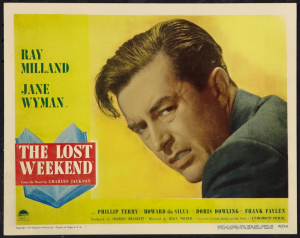

From my Facebook archives, May 2, 2015:
The Lost Weekend. Paramount. 1945. This Billy Wilder-directed film was certainly a change from our typical fare. It is a dark film that chronicles a few days in the life of a near-hopeless alcoholic.
Films with similar themes have been fairly common in recent decades, but this was apparently one of the first. Ray Milland was excellent, as he had to be--he *is* the film.
The score is on the over-dramatic side, and includes Twilight Zone-like sound effects from a theremin. Such sound effects later became strongly associated with science fiction stories so they seem odd in this very earthbound movie. An article I found suggested the score was a reaction to an initial screening, with a more jazzy soundtrack, where the audience laughed at many scenes. With the revised score, it is impossible to think there is any comedy hidden in this film.
The Lost Weekend is a very good film overall. Though it is a reminder of why I prefer lighter fare. Even with an optimistic, if uncertain, Hollywood ending, you don't come away from this film feeling uplifted.